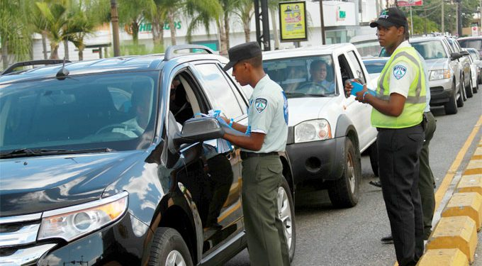
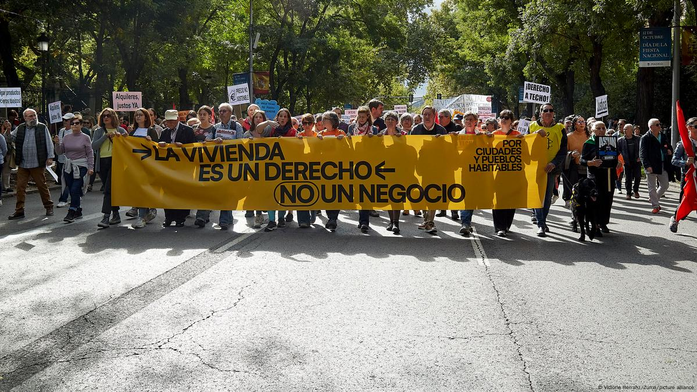
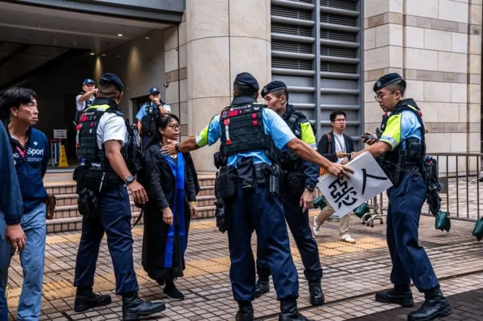

Hace millones de años cuando nuestro planeta era una bola de masa en fusión con cientos de volcanes activos, hicieron que estos gases con vapores de agua emergieran a la superficie en continuas erupciones, dando origen así a la atmósfera.
Digesett ha impuesto más de 1.5 millones de multas de tránsito en el 2024

La seguridad vial ha sido todo un desafío para las autoridades encargadas del tránsito en la República Dominicana, principalmente por la violación de las leyes de tránsito que resultan en accidentes y problemas que afectan la movilidad.
En el registro de la Dirección General de Seguridad de Tránsito y Transporte Terrestre (Digesett), desde enero hasta octubre de 2024, se han anotado 1,574,820 infracciones de tránsito, según datos publicados en su portal de datos abiertos.
Las estadísticas también indican que julio de 2024 fue el mes con la mayor cantidad de multas, alcanzando un total de 187,703 infracciones.
Multas por mes en 2024
Enero: 157,360
Febrero: 106,288
Marzo: 165,397
Abril: 146,353
Mayo: 94,460
Junio: 178,599
Julio: 187,703
Agosto: 177,532
Septiembre: 175,424
Octubre: 185,704
Infracciones más comunes
La infracción por no usar casco protector es la más frecuente registrada por la Digesett entre enero y octubre de 2024, con un total de 461,425 multas.
Fuente: Diario Libre
Detienen al haitiano que habría agredido a personal del Darío Contreras; iba con 16 ilegales
El Ejército dominicano informó este viernes que entregó a la Policía Nacional al haitiano involucrado en un incidente en el Hospital Darío Contreras el pasado 17 de noviembre, en el que resultaron heridos varios miembros del personal médico.
El individuo, identificado como Wilson Gabriel, fue detenido por una patrulla militar en una zona boscosa próximo al arroyo Carrizal, donde fue detectado un grupo de 16 indocumentados que intentaban ingresar al país.
Las autoridades informaron que Gabriel "actuó de manera extraña", ya que cuando vio la patrullada del Ejército procedió a untarse lodo del arroto en la cabeza y el rostro, como si se tratara de un camuflaje.
Fuente: Listin Diario
Educación censura incursión PN en politécnico
Santo Domingo. El Ministerio de Educación de la República Dominicana (Minerd) condenó este viernes la intervención de agentes de la Policía Nacional en el Politécnico Manuel María Castillo, ubicado en San Francisco de Macorís, calificando la acción como impropia e inaceptable.
«Es impropio que la Policía Nacional entre sin autorización a un recinto escolar, donde debe primar la tranquilidad de los alumnos, docentes y padres», manifestó el Ministerio de Educación en un comunicado.
La institución informó que, tras los disturbios ocurridos el día anterior, intervino el centro educativo y designó a tres técnicos distritales para asumir la dirección del plantel.
Los incidentes fueron provocados por estudiantes afiliados a la Fuerza Estudiantil Revolucionaria (FER), quienes encendieron neumáticos y lanzaron piedras y desechos frente al recinto escolar en protesta por el traslado del director y para exigir mejoras en la gestión del politécnico.
Desde las primeras horas de la mañana de este viernes, representantes de la comunidad educativa se reunieron para elaborar un plan de acción orientado a fortalecer la seguridad y promover una cultura de paz en la escuela.
Asimismo, el Minerd anunció la suspensión de las actividades educativas por el resto de la semana como medida preventiva para salvaguardar la integridad física de los estudiantes y el personal docente.
En relación con la incursión policial, el Ministerio de Educación explicó que agentes de la Dirección Central de Investigaciones Criminales (Dicrim), una división de la Policía Nacional, respondieron a un llamado de auxilio realizado por docentes del politécnico. Los profesores denunciaron que personas ajenas al centro habían escalado por una pared trasera e ingresado al recinto sin autorización.
Fuente: El Nacional
Noticias Internacionales
Europa
Miles de manifestantes protestan en Barcelona por el precio de los alquileres

Miles de personas se han manifestado este sábado por las calles de Barcelona exigiendo una bajada generalizada de los alquileres y una mejora de las condiciones de los inquilinos. Según las autoridades locales, los asistentes a la manifestación alcanzaron los 22.000, mientras que según los organizadores han sido 126.000.
Entre las principales reivindicaciones, los barceloneses piden un fomento mayor de los contratos de alquiler indefinidos, para, según los organizadores, "acabar con el chantaje y la inseguridad al final de cada contrato".
También reclaman una prohibición de la compra con fines especulativos y que se ponga freno al alquiler vacacional, recuperando viviendas para devolverlas a un uso residencial en una de las ciudades con más turismo del continente europeo.
Bajo el lema 'S'ha Acabat' ('Se ha acabado' en catalán), los grupos organizadores, entre los que se encuentra el Sindicat de Llogateres i Llogaters, reclaman además una bajada de los precios de los alquileres de al menos un 50%, y amenazan con convocar una huelga de alquileres si esto no ocurre.
Fuente: es.euronews.com
Asia
Hong Kong condena a 45 opositores a favor de la democracia con penas de hasta 10 años

La justicia hongkonesa ha condenado esta semana a 45 activistas prodemocracia. Mientras la oposición lamenta que el movimiento ha sido “hecho pedazos”, la ciudad financiera trata de recuperar su prestigio internacional y económico.
Los encarcelados forman parte de un grupo conocido como los "47 de Hong Kong", que fueron acusados en 2021 de conspiración para cometer subversión en virtud de una polémica ley de seguridad nacional impuesta por Pekín en 2020 que conlleva penas de hasta cadena perpetua.
La acusación fue formulada luego de que los "47 de Hong Kong" participaran en unas primarias preelectorales celebradas en 2020 para elegir candidatos de la oposición para las elecciones generales del territorio.
Benny Tai, un exjurista identificado en la sentencia como el "cerebro" del plan preelectoral, fue condenado a 10 años de cárcel, la mayor pena impuesta hasta la fecha en virtud de la controvertida ley de seguridad.
Joshua Wong, uno de los principales líderes de las grandes protestas de 2019, fue sentenciado a cuatro años y ocho meses de prisión tras recibir una reducción de un tercio de su condena por declararse culpable.
El tribunal lo acusó de ser un “participante activo” del plan preelectoral. No se le concedieron más reducciones porque los jueces "no lo consideraron una persona de buena conducta".
En medio de la audiencia, Wong gritó: "Amo a Hong Kong", antes de abandonar el banquillo de los acusados.
Fuente: bbc.com
Norteamerica
EE.UU. informan sobre una campaña de ciberespionaje china, según la Casa Blanca
Altos ejecutivos del sector de las telecomunicaciones se reunieron el viernes en la Casa Blanca con responsables de seguridad nacional de Estados Unidos, en un momento en el que crece la preocupación por una larga campaña de ciberespionaje china dirigida contra algunas de las figuras políticas estadounidenses de más alto nivel.
Los hackers se infiltraron en algunos de los principales proveedores de telecomunicaciones estadounidenses para espiar llamadas telefónicas y mensajes de texto, y ha resultado difícil expulsarlos de algunas redes, según personas informadas sobre el asunto.
Las reuniones fueron una oportunidad para que los ejecutivos de telecomunicaciones asesoraran al Gobierno sobre cómo reforzar sus defensas contra los sofisticados ataques informáticos, según la Casa Blanca. Los grupos también intercambiaron información sobre la operación.
El teléfono del abogado de Trump fue intervenido por hackers chinos, dijeron fuentes a CNN.
El ciberataque se perfila como uno de los mayores retos cibernéticos y de seguridad nacional a los que se enfrenta el Gobierno entrante de Donald Trump.
En otro indicador de las crecientes preocupaciones sobre la campaña de ciberespionaje, se ha programado una sesión informativa clasificada para todos los senadores el 4 de diciembre, después de que el Congreso regrese del receso el próximo mes, de acuerdo con un asistente del Senado.
Es “de lejos” el “peor hackeo de telecomunicaciones en la historia de nuestra nación”, dijo a CNN el senador Mark Warner, demócrata de Virginia y presidente de la Comisión de Inteligencia.
Pero aún se está investigando el alcance total del hackeo, a quién afecta y su impacto en la seguridad nacional.
El FBI ha notificado a menos de 150 víctimas, la mayoría en la zona de Washington, según Warner. No obstante, es probable que todas esas víctimas hayan llamado o enviado mensajes de texto a numerosas personas, lo que significa que el número de registros a los que accedieron los piratas informáticos es probablemente mucho mayor. Los piratas podrían escuchar las llamadas de objetivos concretos durante determinados periodos de tiempo, según Warner.
Funcionarios estadounidenses y ciberexpertos privados llevan la cuenta del número de empresas de telecomunicaciones que han sufrido ataques. Los proveedores estadounidenses de banda ancha e Internet AT&T, Verizon y Lumen han sido blanco de los ataques, según informó anteriormente CNN.
Los hackers han atacado las comunicaciones telefónicas de altos cargos de los partidos Republicano y Demócrata, incluidos el presidente electo Donald Trump, el vicepresidente electo J. D. Vance, Jared Kushner y Eric Trump, según ha informado CNN.
China ha negado las acusaciones de hackeo.
Fuente: cnn.com
Suramerica
El cambio electoral que Milei quiere hacer en Argentina
El Gobierno argentino pretende eliminar las elecciones primarias y modificar la forma de organización de los partidos y su financiación.
El Gobierno de Javier Milei anunció el pasado día 15 que enviará un proyecto de ley al Congreso para eliminar las elecciones primarias y modificar la forma de organización de los partidos políticos y de financiación. El proyecto de ley de “reforma para el fortalecimiento electoral” fue anunciado por el portavoz presidencial, Manuel Adorni, quien dijo que la “sociedad argentina prácticamente vive en una constante campaña electoral”.
Según Adorni, este hecho en lugar de generar mayor participación de la ciudadanía en la política, ha generado “cansancio y hastío”, mientras que “la política dirimió sus propios problemas con el dinero de los contribuyentes”, afirmó el portavoz. Así, este proyecto de ley propone eliminar las primarias abiertas simultáneas y obligatorias (PASO), que, según el gobierno, “ha funcionado como una encuesta millonaria al servicio de la política, en detrimento de la economía y el tiempo de los argentinos”.
Adorni señaló que el pasado año los argentinos tuvieron que ir a votar tres veces (las primarias, las generales y el balotaje presidencial), mientras que en 2011, solo diez agrupaciones políticas resultaron internas para las presidenciales, de las cuales el 40% no logró llegar al 1% del umbral para participar luego de las generales.
Evitar los ‘sellos de goma’
Este proyecto sugiere además modificar la ley orgánica de partidos políticos para “mejorar su representatividad y evitar los famosos sellos de goma”, cuyo “único objetivo es el recaudatorio”, porque pueden inscribirse para obtener financiamiento pese a no contar con partidarios. Los ‘sellos de goma’ en Argentina hacen referencia a aquellas agrupaciones políticas de escasa representación.
De esta manera, se modifica el sistema de financiamiento de los partidos políticos “para reducir el gasto público y transparentar los recursos que reciben los partidos”. Según Adorni, se aumentará el “tope de aportes privados”, se eliminarán los espacios de publicidad electoral a los que estaban obligados a ofrecer los medios y el financiamiento público para las campañas será “proporcional a los resultados electorales”.
Nuevos requisitos para constituirse como partido
Así, según el portavoz presidencial, los requisitos para constituirse como partido político serán contar con el 0,5% de afiliados sobre el padrón electoral, en lugar del 0,4%, contar con un mínimo del 3% de los votos en dos elecciones consecutivas y que los partidos nacionales tengan presencia en al menos diez distritos, en lugar de cinco. Mientras tanto, se presentará una plataforma digital para gestionar afiliaciones y revalidaciones, donde las agrupaciones tendrán hasta 2026 para adecuarse a los cambios.

 Historia
Historia
 Productos
Servicios
Productos
Servicios
 Contacto
Contacto